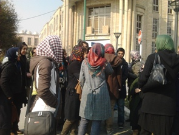
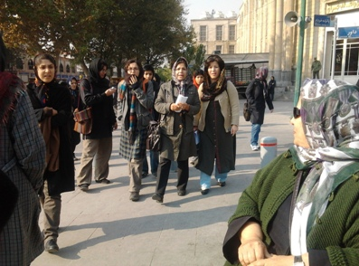

|
|

حضور زنان در مقابل دادستانی کل تهران برای پیگیری وضعیت نسرین ستوده
يكشنبه12 آذر 1391
تغییر برای برابری: دهها تن از فعالان جنبش زنان ایران با نوشتن نامه ای از وضعیت وخیم نسرین ستوده که بیش از 45 روز است در اعتصاب غذا به سر می برد؛ ابراز نگرانی کردند و صبح امروز برای نشان دادن این نگرانی، مقابل دادستانی تهران جمع شدند تا نامه خود را به دادستان برسانند. آنها در این نامه که خطاب به دادستان کل تهران، جعفری دولت آبادی، نوشته شده و به امضای تعدادی از مدافعان حقوق زنان رسیده بود، ضمن اعلام حمایت از خواسته های نسرین ستوده، درخواست انتقال سریع وی به بیمارستانی مجهز را مطرح کردند.

فعالان زنان در 47 مین روز اعتصاب نسرین ستوده خواهان ملاقات با دادستان کل تهران بودند که با اعلام ممکن نبودن این دیدار، نامه را به معاون دادستان، خدابخشی، تحویل دادند.
حاضران در این دیدار در واکنش به برخورد معاون دادستان که معتقد بود تنها خانوادهی نسرین میتوانند پیگیر کار او باشند، ابراز کردند که شرایط نسرین نه تنها به دلیل انسانی بودن موضوع، بلکه از این لحاظ که وی یکی از وکلای متعهد جنبش زنان است، برایشان از اهمیت ویژه ای برخوردار است و آنان وظیفه خود می دانند که پیگیر وضعیت وی باشند.
نسرین ستوده از 26 مهر ماه 1391 برای پنجمین بار دست به اعتصاب غذا زده و امروز چهل و هفت روز اعتصاب را پشت سر میگذارد، این در حالیست که خواستهی او تنها برداشتن فشار از روی خانوادهاش و به ویژه رفع ممنوعالخروجی دخترش مهراوه است، که با حکم دادستانی ممنوعالخروج شده است.

ادامهی اعتصاب غذای نسرین که به گفتهی خودش نامحدود است موجی از نگرانی را میان فعالان جامعه مدنی و زنان ایجاد کرده است، به گفتهی یکی از حاضران در برنامهی امروز آنها تصمیم دارند وضعیت نسرین را با مراجعه به مراجع قانونی دیگر ادامه دهند.